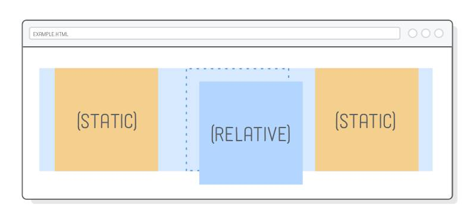
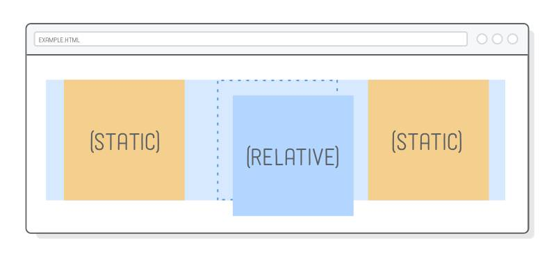

CSS 有两个最重要的基本属性，前端开发必须掌握：display 和 position。
display属性指定网页的布局。两个重要的布局，我已经介绍过了：弹性布局flex和网格布局grid。
本文介绍非常有用的position属性。我希望通过10分钟的阅读，帮助大家轻松掌握网页定位，说清楚浏览器如何计算网页元素的位置，尤其是新引进的sticky定位
position属性用来指定一个元素在网页上的位置，一共有5种定位方式，即position属性主要有五个值。
下面就依次介绍这五个值。最后一个sticky是2017年浏览器才支持的，本文将重点介绍。
static是position属性的默认值。如果省略position属性，浏览器就认为该元素是static定位。
这时，浏览器会按照源码的顺序，决定每个元素的位置，这称为"正常的页面流"（normal flow）。每个块级元素占据自己的区块（block），元素与元素之间不产生重叠，这个位置就是元素的默认位置。

注意，static定位所导致的元素位置，是浏览器自主决定的，所以这时top、bottom、left、right这四个属性无效。
relative、absolute、fixed这三个属性值有一个共同点，都是相对于某个基点的定位，不同之处仅仅在于基点不同。
所以，只要理解了它们的基点是什么，就很容易掌握这三个属性值。
这三种定位都不会对其他元素的位置产生影响，因此元素之间可能产生重叠。
relative 表示，相对于默认位置（即 static 时的位置）进行偏移，即定位基点是元素的默认位置。
 

它必须搭配 top、bottom、left、right 这四个属性一起使用，用来指定偏移的方向和距离。

div {
position: relative;
top: 20px;
}
上面代码中，div元素从默认位置向下偏移20px（即距离顶部20px）。
absolute表示，相对于上级元素（一般是父元素）进行偏移，即定位基点是父元素。
它有一个重要的限制条件：定位基点（一般是父元素）不能是static定位，否则定位基点就会变成整个网页的根元素html。
另外，absolute定位也必须搭配top、bottom、left、right这四个属性一起使用。
上面代码中，父元素是 relative 定位，子元素是 absolute 定位，所以子元素的定位基点是父元素，相对于父元素的顶部向下偏移20px。
如果父元素是 static 定位，上例的子元素就是距离网页的顶部向下偏移 20px。
注意，absolute定位的元素会被"正常页面流"忽略，即在"正常页面流"中，该元素所占空间为零，周边元素不受影响。
fixed 表示，相对于视口（viewport，浏览器窗口）进行偏移，即定位基点是浏览器窗口。这会导致元素的位置不随页面滚动而变化，好像固定在网页上一样。

它如果搭配 top、bottom、left、right 这四个属性一起使用，表示元素的初始位置是基于视口计算的，否则初始位置就是元素的默认位置。
上面代码中， ( 飘在最上面的红色div写着 fixed ) div元素始终在视口顶部，不随网页滚动而变化。
sticky 跟前面四个属性值都不一样，它会产生动态效果，很像 relative 和 fixed 的结合：
一些时候是 relative 定位（定位基点是自身默认位置），另一些时候自动变成 fixed 定位（定位基点是视口）。
因此，它能够形成"动态固定"的效果。比如，网页的搜索工具栏，初始加载时在自己的默认位置（relative 定位）。